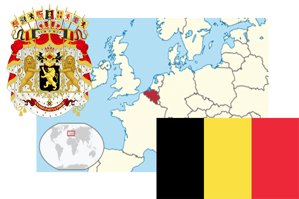

To`liq nomi: Belgiya qirolligi
Region: Shimoliy-G`arbiy yevropa
Qonunchilik shakli: Konstitutsion monarxiya
Mustaqillik kuni: 1839 - yil Gollandiyadan
Poytaxti: Bryussel
Maydoni: 30528 km² (dunyoda 136 -o`rinda )
Chegaradosh davlatlari: Gollandiya, Germaniya, Lyuksemburg, Fransiya
Aholisi: 11 358 952 (dunyoda 77 -o`rinda ) 2017 -yil roʻyxat
Aholi zichligi: 368,3 /km²
Aholining o`rtacha yoshi: 79,0 yil ( 82,2 ayollar, 75,8 erkaklar)
Rasmiy tili: Gollandcha,fransuscha va nemischa
Dini: Asosiy qismi katolik
Pul birligi: yevro
Telefon prefiksi: +32
Internet domen: .be
Xalqaro tashkilotlarga a`zoligi: BMT (1945 -yildan), Shimoliy Atlantika shartnomasi (1949-yil) Yevropa Ittifoqi (1957-yil)
Dengiz va okeanlarga chiqishi: Shimoliy dengiz
YIM: Butun: $ 494,620 mlrd, Jon boshiga: $ 43,629 (2015 - yil roʻyxati)
Yirik shaharlari: Bryussel, Antverpen, Gent, Lej